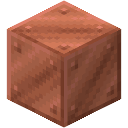

Разработка ботов и автоматизация процессов на Python. Быстро, качественно и с вниманием к деталям.
Разработка продвинутых Telegram ботов и скриптов для автоматизации любых процессов и работы с данными.
Создание скриптов для автоматизации рутинных задач, парсинга данных и интеграции с различными API.
Верстка современных адаптивных сайтов с эффектами и плавными анимациями для вашего бизнеса.
Уникальный бот для анонимного общения. Позволяет отправлять в одном сообщении до 3 различных типов медиа (стикеры, видео, фото, аудио, кружочки).
Мощный инструмент для скачивания видео из TikTok, Instagram, YouTube, Twitter и других платформ. Поддерживает удобный Inline-режим.